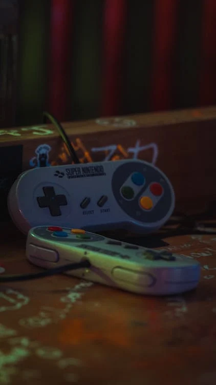
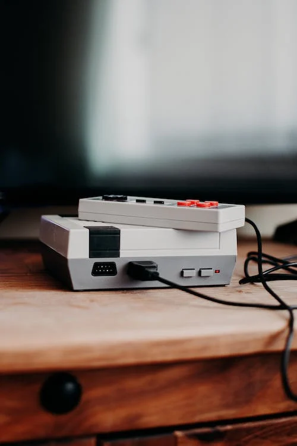
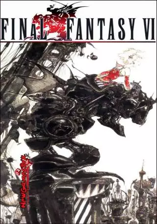
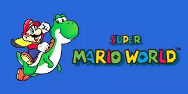
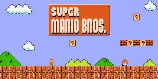
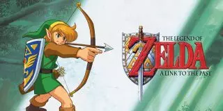
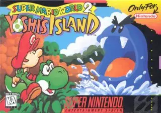

Le rétrogaming, voilà une activité très en vogue depuis plusieurs années.
Les éditeurs de jeux vidéo, les studios et les boutiques ont bien flairé le potentiel de ce marché qui ne cesse de grandir.
Entre les remakes, la flambée des prix des anciennes consoles, les arnaques et la multiplication des jeux en pixel art, revenons quelques instants sur ce phénomène qui rassemble les joueurs de tout âge et de toute génération.
QU’EST CE QUE LE RETROGAMING?
Le rétrogaming est un mot qui vient du latin “retro” signifiant “en arrière” et de l’anglais “gaming”, qui désigne les jeux vidéo. C’est donc plus généralement un terme qui regroupe tout ce qui concerne la pratique, la collection et l’entretien des anciens jeux vidéo, des anciennes consoles et de leurs accessoires, allant même jusqu’aux bornes d’arcade.
Mais tous les joueurs n’ont pas eu les mêmes consoles ni les mêmes jeux lorsqu’ils étaient enfants. Là où certains considèrent un titre comme du rétrogaming, d’autres ne sont pas de cet avis et voient en lui un jeu récent. Chaque génération a un rapport au rétrogaming différent.
Histoire du retrogaming
C’est pourquoi il est si difficile de dater les débuts du rétrogaming. Chaque joueur a sa conception personnelle du terme “rétro”. Pour certains, le concept est apparu dans la deuxième partie des années 80. À cette époque, on voit apparaître les premiers remakes, notamment du célèbre jeu Pac-Man, qui se voient dotés de graphismes en 3D et de nouvelles fonctionnalités plus modernes. De la même façon, l’entreprise Namco surfe sur cette vague en sortant Galaga 88 inspiré de Space Invaders sorti en 1978. En réalité, cette époque correspond à l’arrivée dans l’âge adulte de la génération née entre 1965 et 1975. Cette dernière a connu l’apparition des premières consoles et des premiers jeux vidéo. La nostalgie s’installe et ils deviennent, par la même occasion, rétro.

Certains pensent encore que le rétrogaming concerne tout ce qui est sorti avant la première PlayStation de Sony. En effet, beaucoup considèrent que cette console a marqué une véritable rupture dans l’histoire des jeux vidéo, faisant basculer le monde entier dans la 3D. Mais il faut reconnaître que pour les jeunes adultes aujourd’hui, les titres de la PlayStation sont aussi considérés comme du rétrogaming. Il faut donc bien comprendre que chaque année, les jeux et les consoles rétro évoluent.
La plupart des gens s’accordent tout de même pour dater l’apparition du rétrogaming tel que nous le connaissons aujourd’hui aux années 2000. C’est à ce moment que Nintendo propose aux joueurs un véritable bain de nostalgie pour les 20 ans de Mario en 2006. Super Mario puis Super Mario Land 2 datant des années 1990 sortent sur DS. Le succès est immédiat, les joueurs sont ravis de replonger en enfance et de profiter de leurs jeux favoris sur des plateformes plus modernes. C’est à cette date que l’industrie vidéoludique comprend que la nostalgie est un excellent moteur de vente.
Petit à petit, les différents éditeurs vont continuer à créer des remakes et à rééditer leurs anciens jeux. Le rétrogaming va petit à petit devenir de plus en plus populaire. On peut finalement s’accorder pour dire qu’un jeu appartient à la catégorie du rétrogaming quand il provoque de la nostalgie. En partant de ce postulat, les possibilités sont quasi infinies pour les studios. Et chaque année, les joueurs sont ravis de redécouvrir certains titres de leur enfance.
Mais le rétrogaming, ce n’est pas que jouer à d’anciens jeux vidéo remasterisés, vous vous en doutez. Toute une partie de cette pratique consiste à utiliser et à collectionner les jeux et les consoles d’époque. Ces derniers se vendent parfois à prix d’or à des passionnés ravis de posséder ces objets témoignant d’un passé vidéoludique qu’ils adorent.
POURQUOI LE RETROGRAMING CONNAIT UN TEL SUCCES ?

Le succès du rétrogaming ne cesse de croître au fur et à mesure des années. Cela peut s’expliquer par différents facteurs, notamment la nostalgie, la volonté de commencer une collection, le sentiment d’appartenance à un groupe, mais grâce aussi l’immense travail d’archivage effectué par de nombreux internautes. Ce travail permet à tous de découvrir le rétrogaming et de s’y intéresser en profondeur. Voyons toutes ces raisons plus en détail.
Nostalgie et retour en enfance
Beaucoup de joueurs ont été marqués par l’explosion des jeux vidéo et des consoles de salon dans les années 1980-1990. À cette époque, s’acheter une console ou un nouveau jeu était un grand événement. On passait du bon temps, seul, entre amis ou en famille à s’acharner pour terminer un niveau. Si aujourd’hui, le concept n’a pas fondamentalement changé, il faut reconnaître que les jeux vidéo sont plus accessibles et font maintenant partie du quotidien.
Le rétrogaming, c’est donc avant tout un retour en enfance, une pratique qui rappelle de bons souvenirs. C’est l’une des raisons pour lesquelles il est si populaire chez les adultes. Nombreux sont les joueurs qui ont envie de se replonger dans le passé ou de faire connaître à leur entourage les jeux auxquels ils jouaient pendant leur enfance ou leur adolescence.
Et ça, les éditeurs l’ont bien compris. Chaque année de nouvelles éditions des jeux et des consoles des années 80-90 sont rendues disponibles et sont un véritable succès. Il faut dire que les passionnés de rétrogaming les plus nostalgiques considèrent parfois que le passage à la 3D a appauvri les jeux en termes de gameplay. Pour eux, les anciens titres étaient plus difficiles et demandaient de l’acharnement. Ce n’était pas un loisir ouvert à tous. L’engouement pour les remakes est donc logique et s’explique avant tout par la nostalgie d’une époque où les jeux vidéo étaient bien différents.
LES 5 JEUX LES PLUS JOUES EN RETROGAMING.
Final Fantasy VI (1994)
Sorti pour la première fois sur Super Nintendo en 1994, il est considéré par beaucoup de joueurs comme le meilleur jeu de rôle japonais jamais édité. Aujourd’hui encore il se classe comme étant le titre rétrogaming le plus joué dans le monde. Intrigue, bande-son, personnage… Final Fantasy VI a su marquer les esprits de toute une génération de passionnés.

Super Mario World (1990)
Impossible de parler de rétrogaming sans mentionner Nintendo. Super Mario World, développé pour la Super Nintendo en 1990, fut un succès aussi bien critique que commercial. Ce ne sont pas moins de 20 millions d’exemplaires qui ont été vendus à l’international. Aujourd’hui, vous avez la possibilité d’y jouer sur la SNES mini développée par Nintendo il y a quelques années, mais aussi grâce au catalogue Online de la Nintendo Switch.

Super Mario Bros. (1985)
Super Mario Bros, c’est souvent le premier jeu auquel on pense lorsqu’on parle de rétrogaming. Il faut dire que c’est le titre qui a marqué l’enfance de bien des joueurs ! Il est sorti en 1985 sur Nintendo Entertainment System. Il s’agit du premier jeu de la série Super Mario. C’est lui qui démocratise le défilement horizontal ainsi que le système de boss en fin de niveau. Et la bande-son, composée par Koji Kondo, est reconnue internationalement pour être l’hymne des jeux vidéo.

The Legend of Zelda: A Link to the Past (1991)
Si tous les anciens Zelda suscitent chez les joueurs des vagues de nostalgie, A Link to the Past reste l’un de ceux les plus joués en rétrogaming. Développé et édité par Nintendo en 1991 sur Super Nintendo, il est immédiatement acclamé par la presse et les joueurs, qui voient en lui un jeu hors du commun. Aujourd’hui, il est encore possible d’y jouer sur le catalogue Online de la Nintendo Switch.

Super Mario World 2: Yoshi’s Island (1995)
Super Mario World 2 : Yoshi’s Island fait aussi partie des jeux les plus joués en rétrogaming. Il suit le premier opus mais cette fois le joueur incarne Yoshi. Il est sorti en 1995 sur Super Nintendo et aujourd’hui, il est possible d’y jouer sur le catalogue Online de la Nintendo Switch. Comme pour les 4 autres jeux que nous venons de vous présenter, Super Mario World 2 a marqué l’enfance et l’adolescence de beaucoup de joueurs, c’est pourquoi encore aujourd’hui il est si populaire.

Nous pouvons conclure cet article en disant que le rétrogaming est un phénomène à la fois très vaste et très populaire. Tous les aspects de cette pratique sont liés par la nostalgie et les souvenirs d’une enfance heureuse. Vieilles consoles, anciens jeux ou bornes d’arcade, le rétrogaming traverse les générations et crée des groupes soudés qui partagent ensemble une passion commune. Bien entendu, comme pour tout marché populaire et rentable, le marketing et les arnaques foisonnent. Mais c’est avant tout un loisir qui permet de lier tous les joueurs, qu’ils soient grands ou petits.